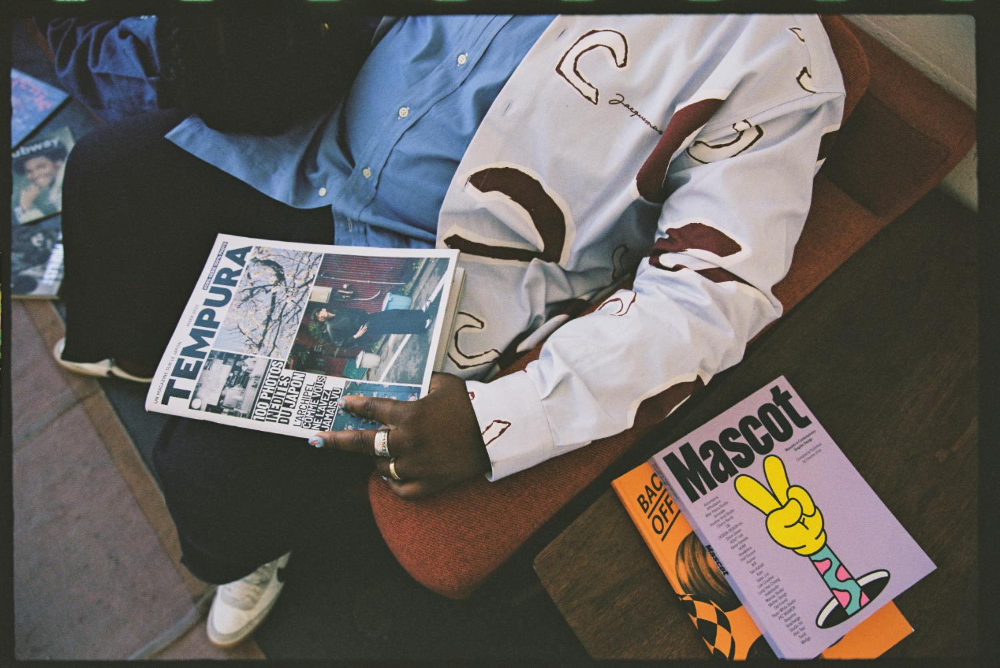
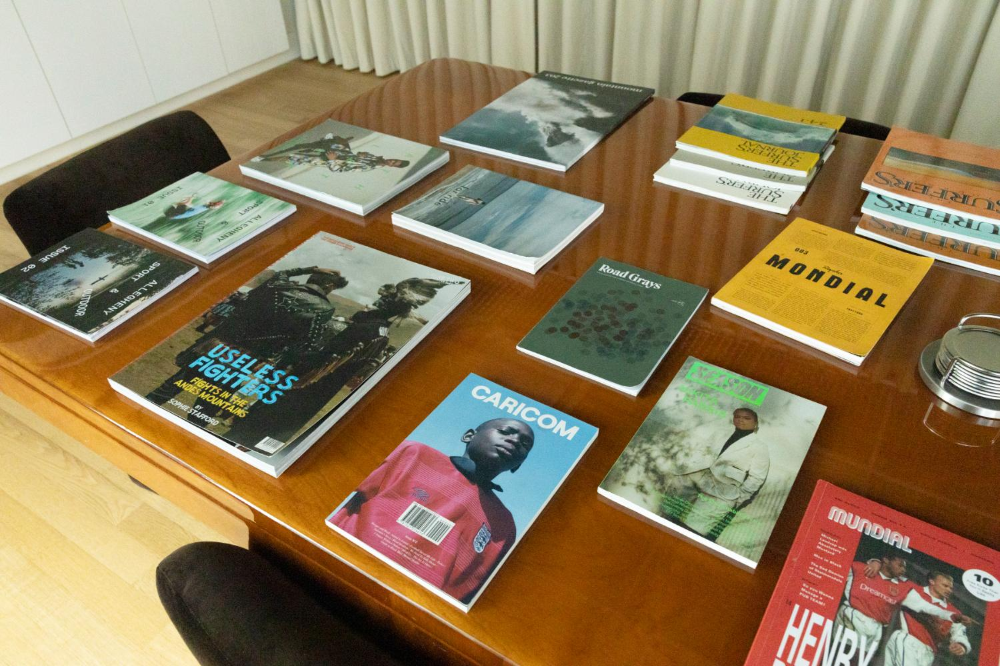

Two flex doors over faded photos with a white scrim. Hovering grows the door to 1.5x and paints the title highlight: accent for publishers, ink for spaces. CTAs match: accent and ink. Wraps to one column under 340px per door.